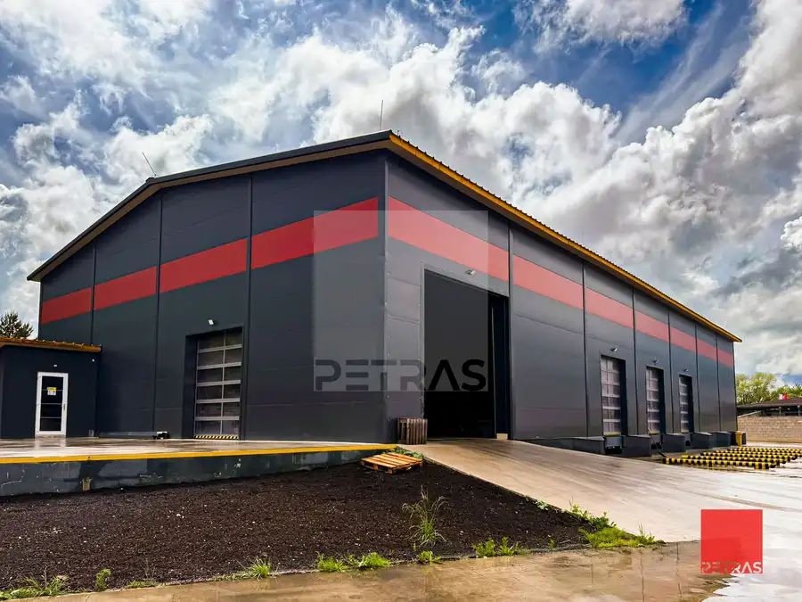
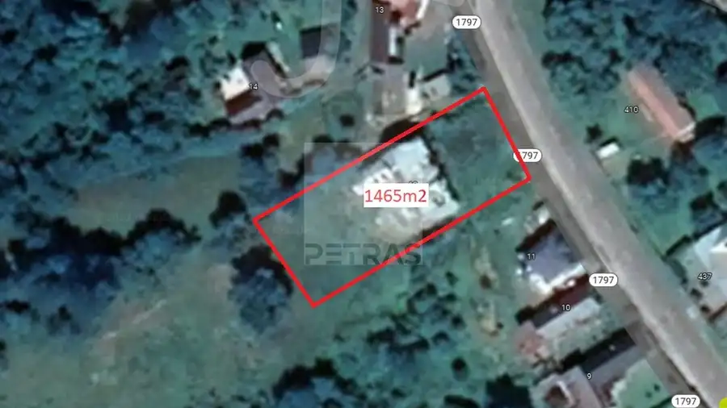
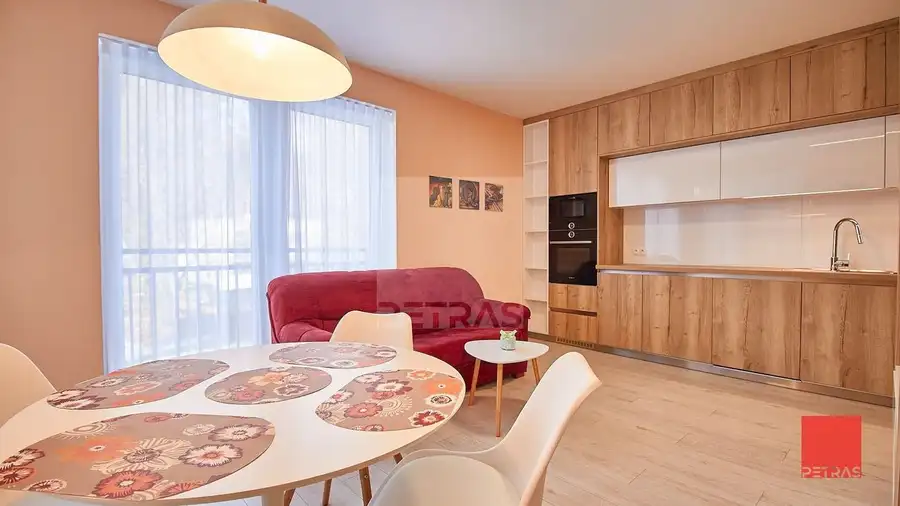
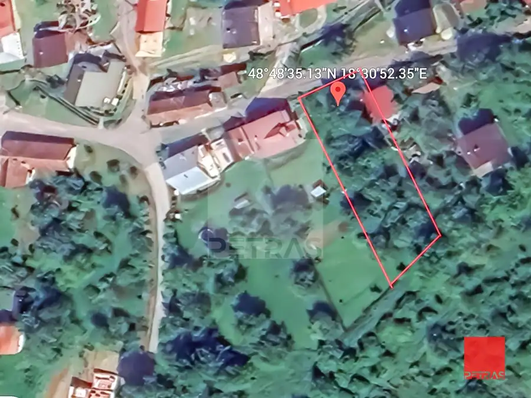
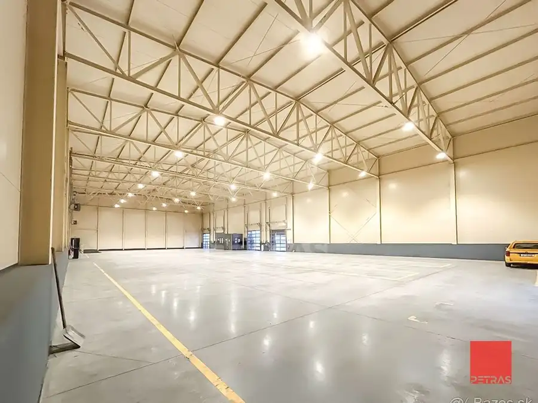
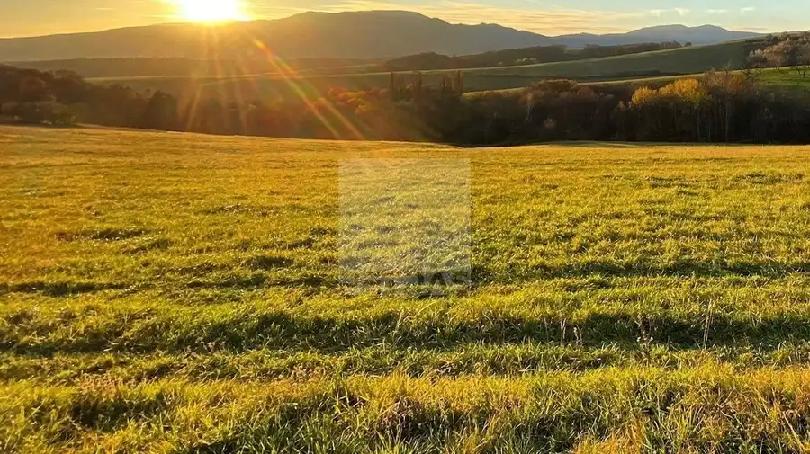
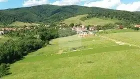

Aktuálna ponuka
Nehnuteľnosti, ktoré ponúkam
12 nehnuteľností na predaj a prenájom. Vyberte typ, alebo napíšte lokalitu.
12 z 12 ponúk
 PozemokNové
990 000 €Pozemok pre developera Bojnice
Bojnice
7000 m²
Hľadáte bezpečnú investíciu s istým výnosom?Expert na nehnuteľnosti Miron Petráš a PETRAS REAL ESTATE vám s radosťou ponúkajú na predaj veľkorysý…
PozemokNové
990 000 €Pozemok pre developera Bojnice
Bojnice
7000 m²
Hľadáte bezpečnú investíciu s istým výnosom?Expert na nehnuteľnosti Miron Petráš a PETRAS REAL ESTATE vám s radosťou ponúkajú na predaj veľkorysý…
 Komerčné priestory8
139 990 €Kancelárie, sklad a sídlo firmy
Prievidza
165 m²
Hľadáte sídlo firmy alebo potrebujete kancelárie pre váš biznis?PETRAS ponúka na predaj samostatnú budovu v atraktívnej lokalite aktuálne využívanú…
Komerčné priestory8
139 990 €Kancelárie, sklad a sídlo firmy
Prievidza
165 m²
Hľadáte sídlo firmy alebo potrebujete kancelárie pre váš biznis?PETRAS ponúka na predaj samostatnú budovu v atraktívnej lokalite aktuálne využívanú…
 Pozemok
408 000 €Komerčný pozemok pre obchod a priemysel
Prievidza
2400 m²
Hľadáte komerčný pozemok so strategickou polohou pre vaše podnikanie alebo chceťe bezpečne a výhodne investovať?Expert na predaj Miron Petráš a…
Pozemok
408 000 €Komerčný pozemok pre obchod a priemysel
Prievidza
2400 m²
Hľadáte komerčný pozemok so strategickou polohou pre vaše podnikanie alebo chceťe bezpečne a výhodne investovať?Expert na predaj Miron Petráš a…
 Komerčné priestory5
21 950 €Moderný priestor – garáž alebo sklad v bezpečnom areáli Ideálne pre podnikanie aj súkromné využitie
Prievidza
16 m²
Hľadáte miesto, kde vaše zásoby, vybavenie, sezónne veci alebo vozidlo budú vždy v bezpečí? Tento nový priestor s možnosťou skladovania alebo…
Komerčné priestory5
21 950 €Moderný priestor – garáž alebo sklad v bezpečnom areáli Ideálne pre podnikanie aj súkromné využitie
Prievidza
16 m²
Hľadáte miesto, kde vaše zásoby, vybavenie, sezónne veci alebo vozidlo budú vždy v bezpečí? Tento nový priestor s možnosťou skladovania alebo…

Komerčné priestoryNové4 Cena dohodouPriestranná hala / sklad Nováky 1000 m² Hľadáte kvalitné priemyselné priestory s kompletným zázemím pre vaše podnikanie?Expert na nehnuteľnosti Miron Petráš a PETRAS REAL ESTATE vám s…
Pozemok Cena dohodouPozemok s povolením na dom Tužina Tužina 1565 m² Snívate o novom dome podľa vlastných predstáv v dostupnej vzdialenosti od Prievidze v srdci prírody?Ponúkame Vám na predaj slnečný pozemok vhodný pre…
Byt10 Cena dohodouÚtulný 1,5 izbový byt castle Bojnice Bojnice 2-izbový40 m²3. podlažie Hľadáte dlhodobé alebo dočasné bývanie v lukratívnej časti mesta Bojnice v novom bytovom dome s výťahom a terasou?Expert na nehnuteľnosti Miron…
Pozemok2 Cena dohodouPekný pozemok Dlžín Dlžín 1015 m² Snívate o novom dome podľa vlastných predstáv v dostupnej vzdialenosti od Prievidze v srdci prírody?Expert na nehnuteľnosti Miron Petráš a PETRAS…
Komerčné priestory10 Cena dohodouNová hala / sklad na prenájom Nováky 3000 m² Hľadáte kvalitné priemyselné priestory s kompletným zázemím pre vaše podnikanie?Expert na nehnuteľnosti Miron Petráš a PETRAS REAL ESTATE vám s… Komerčné priestory10 Cena dohodouNová hala / sklad na prenájom Nováky 3000 m² Hľadáte kvalitné priemyselné priestory s kompletným zázemím pre vaše podnikanie?Expert na nehnuteľnosti Miron Petráš a PETRAS REAL ESTATE vám s…
Pozemok Cena dohodouPozemok v priemyselnom parku Partizánske Partizánske 240000 m² Chcete kúpiť pozemok v priemyselnom parku na priemyselnú výrobu alebo sklady?Expert na nehnuteľnosti Miron Petráš a PETRAS REAL ESTATE vám s radosťou…
PozemokNové5 44 890 €Stavebný pozemok Šútovce so sieťami na pozemku Šútovce 676 m² Snívate o novom dome podľa vlastných predstáv v dostupnej vzdialenosti od Prievidze v srdci prírody? Ponúkame na predaj slnečný pozemok pre rodinný…Tomuto výberu zatiaľ nezodpovedá žiadna ponuka. Napíšte mi, čo hľadáte.